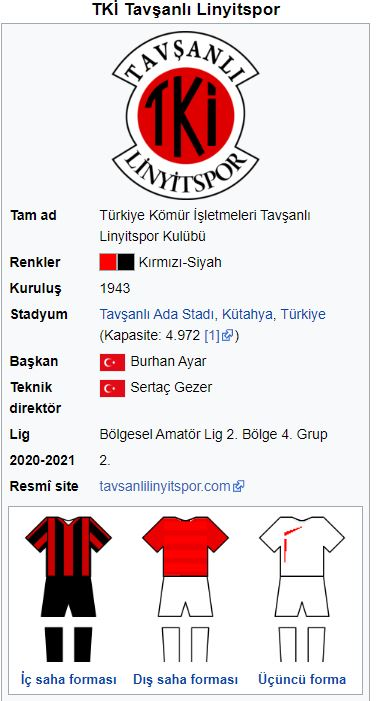

Kuruluş ve İsim Türkiye Kömür İşletmeleri Kurumu'na (TKİ) bağlı olan Garp Linyitleri İşletmesinde (GLİ) çalışan memur ve işçiler ile eş ve çocuklarının spor faaliyetlerinde bulunması amacı ile 1943 yılında kurulmuş, 3530 sayılı Beden Terbiyesi Kanunu ve Dernekler Kanununun ilgili hükümlerine istinaden 16 Mayıs 1945 tarihinde GLİ Gençlik Kulübü adı altında sportif faaliyetlerine başlamıştır. 17 Eylül 1973 tarihinde GLİ Linyitspor Gençlik Kulübü adı altında dernekleşmiş, 28 Ağustos 1980 tarihinde GLİ Tavşanlı Linyitspor Kulübü adı altında yeniden müessese kulübü haline dönüşmüş, 27 Haziran 1987 tarihinde "Kurum Kulübü" sıfatı ile TKİ Tavşanlı Linyitspor Kulübü adı altında dernek olarak faaliyetlerini sürdürmüştür. 2006-2007 futbol sezonunda büyük bir başarı göstererek 3. lige çıkmayı başaran kulüp 2007 yılında yapılan olağanüstü kongrede isim değişikliğine gidilmiş ve ismi Tavşanlı Belediyesi TKİ Linyitspor olarak değiştirilmiştir. 2009 yılında yapılan olağan kongrede tekrar isim değişikliğine gidilmiş, kulübün adı TKİ Tavşanlı Linyitspor olarak değiştirilmiştir.
Kulüp en parlak dönemini 1984-1985 sezonunda katılmış olduğu Türkiye Profesyonel 3. Ligi'nde yaşamıştır. 11 yıl mücadele ettiği bu ligde her yıl şampiyonluğa oynamış ancak bir türlü 2. Türkiye Ligi'ne çıkmayı başaramamıştır. Ligleri 2. ve 3. sıralarda bitirerek Türkiye Kupası müsabakalarına katılmaya hak kazanarak Türkiye'nin sayılı takımları ile başarılı müsabakalar oynamıştır. Kulüp futbol takımı 1995-1996 sezonunda kıl payı küme düşmüş, 1996-2006 yılından bu yana da tekrar 3 ncü lige yükselebilmek için mücadelesini sürdürmüştür. Her yıl 1. Amatör Küme ve İl Play-Off maçlarını açık ara ile birincilikle bitirmiş, ancak 3. Lig'e Terfi Müsabakaları 2. kademelerinde şanssızlık neticesinde bir türlü arzuladığı hedefe ulaşamamıştır. Bu şanssızlığa bakmaksızın hedeflerine ulaşmakta ısrarlı olan kulüp bir üst lige çıkmak için çabalamış ve sonuç olarak 11 yıl aradan sonra 2006-2007 futbol sezonunda Türkiye Futbol Federasyonu Profesyonel 3. Ligi'ne çıkmayı başarmıştır.3. Lig'de bir yıl kaldıktan sonra 2008-2009 sezonunda yükselme grubundan 3. olarak çıkmıştır. TFF 2. Lig 1. Grup'ta, Güngören Belediyespor, Türk Telekom, Sakaryaspor gibi zorlu rakiplerle mücadele etmiştir. Grubu 6. sırada bitiren TKİ Tavşanlı Linyitspor, 1. Klasman Grubu'nu art arda aldığı başarılı sonuçlarla birinci sırada tamamladı ve play-off maçları oynama hakkını kazandı.TKİ Tavşanlı Linyitspor, play-off grubunda normal süresi 0-0 sona eren ilk maçta Adana Demirspor'u penaltılarla 5-3, Trabzon Karadenizspor'u normal sürede 1-0 yenerek eledi ve finalde Eyüpspor'a rakip oldu. 3 yıl öncesine kadar amatör ligde yer alan takım, Eyüpspor'u 2-1 yenerek Güngören Belediyespor ve Akhisar Belediye Gençlikspor'un ardından 1. Lig'e yükselerek, 67 yıllık tarihindeki en önemli başarısını elde etti. Takım 2010-2011 futbol sezonundan 2013-2014 sezonuna kadar PTT 1. Ligi'nde mücadele etmiştir. Ancak takım PTT 1. Lig 2013-14'ün bitimine 1 hafta kala sahasında Gaziantep Büyükşehir Belediyespor'a 2-1 mağlup olarak 4 yıl sonra yeniden 2. Lig'e geri dönmüştür.[1] 1 Nisan 2015'te oynadığı Anadolu Selçukspor maçını kaybederek bitime 5 hafta kala 3. Lig'e düşmüş daha sonra 2015-2016 sezonunda da 3. Lig'de tutunamayıp Bölgesel Amatör Lig'e düşmüştür. Kulüp 2016-2017 sezonundan bu yana Bölgesel Amatör Lig'de mücadele etmektedir.